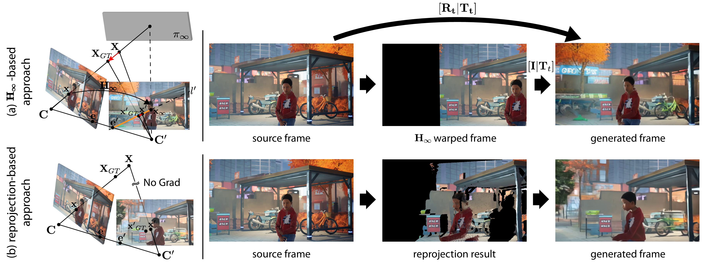
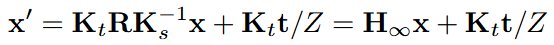
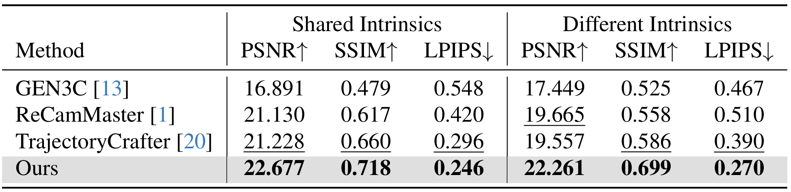
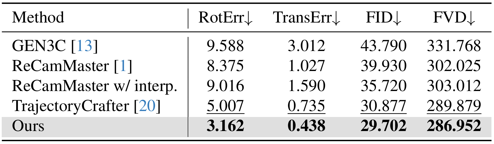

Overview
We present InfCam, a depth-free, camera-controlled video generation framework with high pose fidelity. InfCam introduces infinite homography warping, which encodes 3D camera rotations directly in the 2D latent space, allowing the model to focus on learning the residual parallax for accurate camera control. Combined with a data augmentation pipeline for diverse trajectories and focal lengths, InfCam outperforms baselines in both camera-pose accuracy and visual fidelity.
Motivation

In the reprojection-based approach, inaccuracies in the depth estimation lead to unreliable conditioning, consequently introducing artifacts in the generated frame. In contrast, based on the fact that reprojection can be expressed by the following equation,

Qualitative Results
Qualitative Comparison on Synthetic Data
Per-Method Comparison
Per-Method Comparison
(including ReCamMaster w/ interp)
Quantitative Comparison


AugMCV dataset. We evaluate our method under two scenarios: (1) source and target videos with identical camera intrinsics, and (2) source and target videos with different camera intrinsics. Across both settings and all metrics, our approach consistently outperforms the baselines, producing videos that are clearly closer to the ground truth.
WebVid dataset. We further validate our method on the WebVid dataset, where it again consistently outperforms baseline approaches in terms of both camera pose accuracy and visual fidelity, with particularly pronounced gains in camera pose accuracy.
BibTeX
@article{kim2024infcam,
title={InfCam: Infinite-Homography as Robust Conditioning for Camera-Controlled Video Generation},
author={Kim, Min-Jung and Kim, Jeongho and Jin, Hoiyeong and Hyung, Junha and Choo, Jaegul},
journal={arXiv preprint arXiv:2512.17040},
year={2024}
}